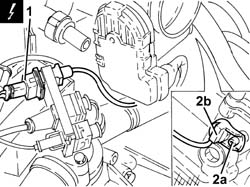
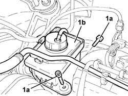
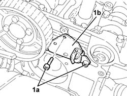

1056B51 CAM ANGLE SENSOR R + R
- Path
- Procedures > 10 ENGINE UNIT > 1056 PETROL INJECTION SYSTEM > 1056B MULTI-POINT INJECTION SYSTEM (MPI) > 1056B51 CAM ANGLE SENSOR R + R
- Kind
- repair procedure (removal / refitting; the operation number is the code)
- Applies to
- engines: 1.8 T.SPARK, 3.2 V6; all production periods
- Interactive page
- https://sloeber94.github.io/elrnDB-aGt/en/#/125002600
Applies to: engines: 3.2 V6; all production periods
 Removing
Removing
 Refitting
RefittingProceed with the removal
Open the cover of the electrical connection holder and remove the connections.
1. Disconnect the electrical connection from the cam angle sensor and release the wiring from the retaining bands.
Description | Connector | |
|---|---|---|
1 | Timing sensor |
2. Undo the bolt (2a) and remove the cam angle sensor (2b) from the right cylinder head.

Applies to: engines: 3.2 V6; all production periods
Refitting
RemovingRefit the cam angle sensor in its housing on the cylinder head and secure it using the bolt.
Connect the cam angle sensor electrical connection and fasten the electric wiring.
Refit the connections and close the electrical connection holder cover.
Proceed with the refitting
Applies to: engines: 1.8 T.SPARK; all production periods
Removing
RefittingProceed with the removal
Op. 4450B04 RIGHT FRONT WHEEL R R
Proceed with the removal
Op. 7055B66 ENGINE COMPARTMENT DUST SHIELD PROTECTION IN RIGHT FRONT WHEEL ARCH - R.R.
Proceed with the removal
Op. 1092G10 SINGLE ENGINE BELT R R.
Proceed with the removal
Op. 1092A10 CRANKSHAFT SERVICES PULLEY - R.R..
Proceed with the removal
Op. 1092G20 ENGINE COMPONENT SINGLE BELT FIXED TENSIONER - ONE - R + R.
Proceed with the removal
Op. 1032D12 TIMING SYSTEM PROTECTIVE COVER(S) - R + R.
Proceed with the removal
Op. 1016A40 IGNITION COIL COVER ON CYLINDER HEAD- R+R.
Proceed with the removal
Op. 5510C14 IGNITION COIL/S - R+R
.
Proceed with the removal
Op. 1016A20 SINGLE CAM COVER - R + R AND REPLACE GASKET.
Proceed with the removal
Op. 1032B10 TOOTHED TIMING BELT - R + R FOR TIMING ADJUSTMENT OR REPLACEMENT.
Proceed with the removal
Op. 1088C14 WATER PUMP - R + R WITH DRIVE BELT REMOVED.
1. Undo the bolt (1a) for the exhaust side driven toothed pulley using the tools (1b) and (1c) for counter-torque.
Description | Code | |
|---|---|---|
1b | Counter-torque | 1.822.156.000 |
Description | Code | |
|---|---|---|
1c | Counter-torque | 1.822.146.000 |
2. Remove the exhaust side toothed driven pulley.

Applies to: engines: 1.8 T.SPARK; all production periods
1. Undo the bolts (1a) and move the power steering fluid reservoir (1b) without disconnecting the pipes.

Applies to: engines: 1.8 T.SPARK; all production periods
1. Disconnect the electrical connection from the cam angle sensor and release the wiring from the fastenings on the modular intake manifold.
Description | Connector | |
|---|---|---|
1 | Timing sensor | K47 |
2. Release the cam angle sensor electrical wiring from the collar on the power steering reservoir bracket.

Applies to: engines: 1.8 T.SPARK; all production periods
1. Undo the bolts (1a) and remove the cam angle sensor (1b) with the electrical wiring.

Applies to: engines: 1.8 T.SPARK; all production periods
Refitting
RemovingPlace the cam angle sensor with its wiring back in its housing and secure it by tightening the bolts to the recommended torque.
Fastening | Component | Ø | Value (daNm) | |
|---|---|---|---|---|
- | Bolt | CAM ANGLE SENSOR | M6 | (Cylinder head side) 0.8 - 1.0 |
Fasten the cam angle sensor electrical wiring using the collar on the power steering reservoir bracket.
Connect the cam angle sensor electrical connection and secure the wiring to the fastening on the modular intake manifold.
Refit the power steering fluid reservoir and secure with the bolts.
Refit the exhaust side toothed driven pulley in its seat and secure with the bolt without tightening.
Proceed with the refitting
Op. 1088C14 WATER PUMP - R + R WITH DRIVE BELT REMOVED.
Proceed with the refitting
Op. 1032B10 TOOTHED TIMING BELT - R + R FOR TIMING ADJUSTMENT OR REPLACEMENT.
Proceed with the refitting
Op. 1016A20 SINGLE CAM COVER - R + R AND REPLACE GASKET.
Proceed with the refitting
Op. 5510C14 IGNITION COIL/S - R+R.
.
Proceed with the refitting
Op. 1016A40 IGNITION COIL COVER ON CYLINDER HEAD- R+R.
Proceed with the refitting
Op. 1032D12 TIMING SYSTEM PROTECTIVE COVER(S) - R + R.
Proceed with the refitting
Op. 1092G20 ENGINE COMPONENT SINGLE BELT FIXED TENSIONER - ONE - R + R.
Proceed with the refitting
Op. 1092A10 CRANKSHAFT SERVICES PULLEY - R.R..
Proceed with the refitting
Op. 1092G10 SINGLE ENGINE BELT R R.
Proceed with the refitting
Op. 7055B66 ENGINE COMPARTMENT DUST SHIELD PROTECTION IN RIGHT FRONT WHEEL ARCH - R.R.
Proceed with the refitting
Topics linked from this page (12)
- 1016A20 SINGLE CAM COVER - R + R AND REPLACE GASKET
- 1016A40 IGNITION COIL COVER ON CYLINDER HEAD- R+R
- 1032B10 TOOTHED TIMING BELT - R + R FOR TIMING ADJUSTMENT OR REPLACEMENT
- 1032D12 TIMING SYSTEM PROTECTIVE COVER(S) - R + R
- 1088C14 WATER PUMP - R + R WITH DRIVE BELT REMOVED
- 1092A10 CRANKSHAFT SERVICES PULLEY - R.R.
- 1092G10 SINGLE ENGINE BELT R R
- 1092G20 ENGINE COMPONENT SINGLE BELT FIXED TENSIONER - ONE - R + R
- 4450B04 RIGHT FRONT WHEEL R R
- 5530B10 BATTERY - R+R
- 7055B66 ENGINE COMPARTMENT DUST SHIELD PROTECTION IN RIGHT FRONT WHEEL ARCH - R.R.
- K47 Timing sensor.